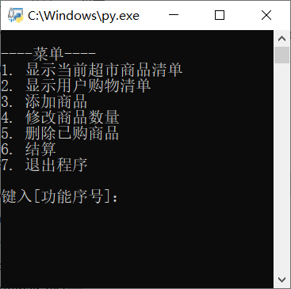

第一小组
本示例将会开发一个控制台超市系统，用户可以通过程序提供的命令进行购物
实质是货物这一数据的增删改查处理及其展示
# 获取商品列表
def getProduct(self, id=-1): pass
# 获取购物清单
def getShopping(self, index=-1): pass
# 添加商品
def addProductToShoppingList(self, productId, count): pass
# 修改商品数量
def modifyProductFromShoppingList(self, productId, count): pass
# 删除商品
def removeProductFromShoppingList(self, productId): pass
# 清空商品
def clearProductFromShoppingList(self): pass
该类专做商品数据的处理，对外提供接口，并对数据合理性进行验证
将应用分成了6个小功能
软件开发流程部分的贯通...
... Python语言开发基础 ...
... 综合能力 ...
数据库, QT图形界面, 网页展示